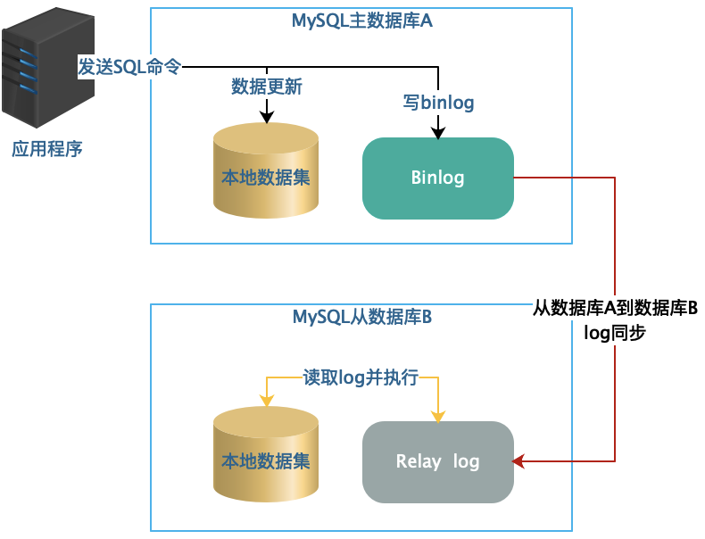
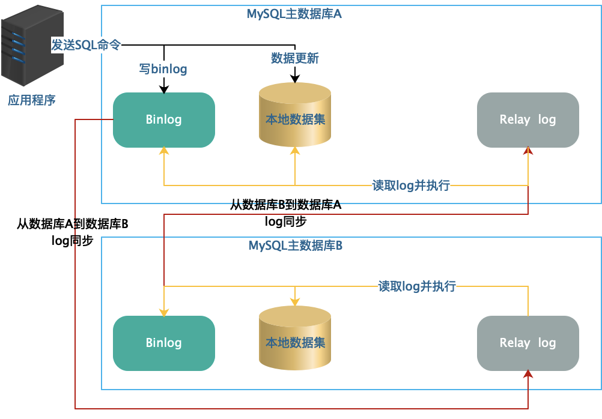
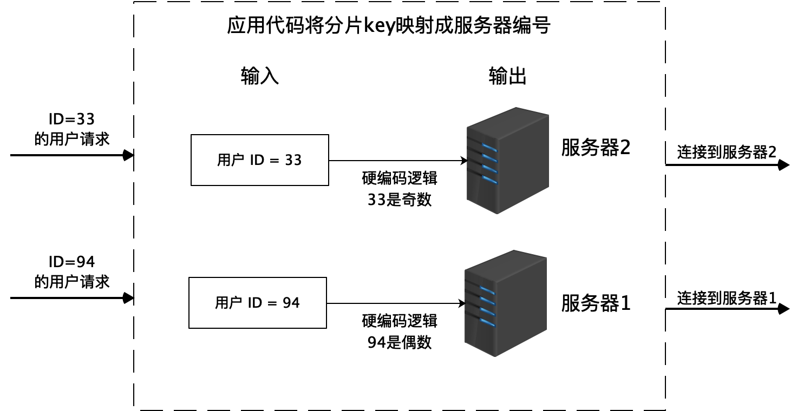
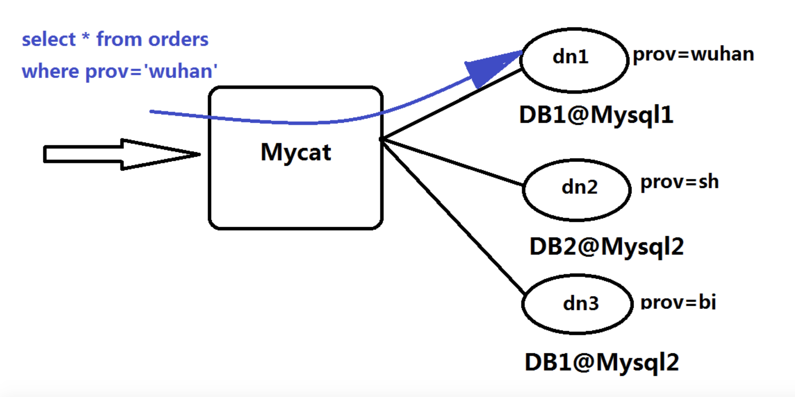
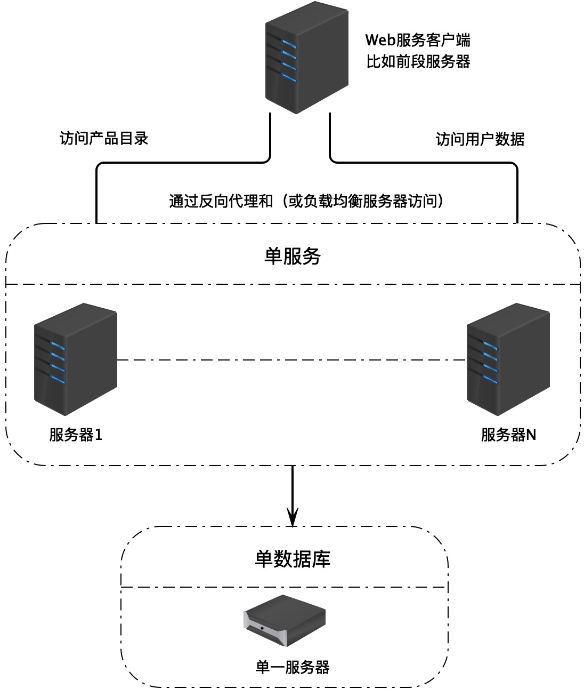
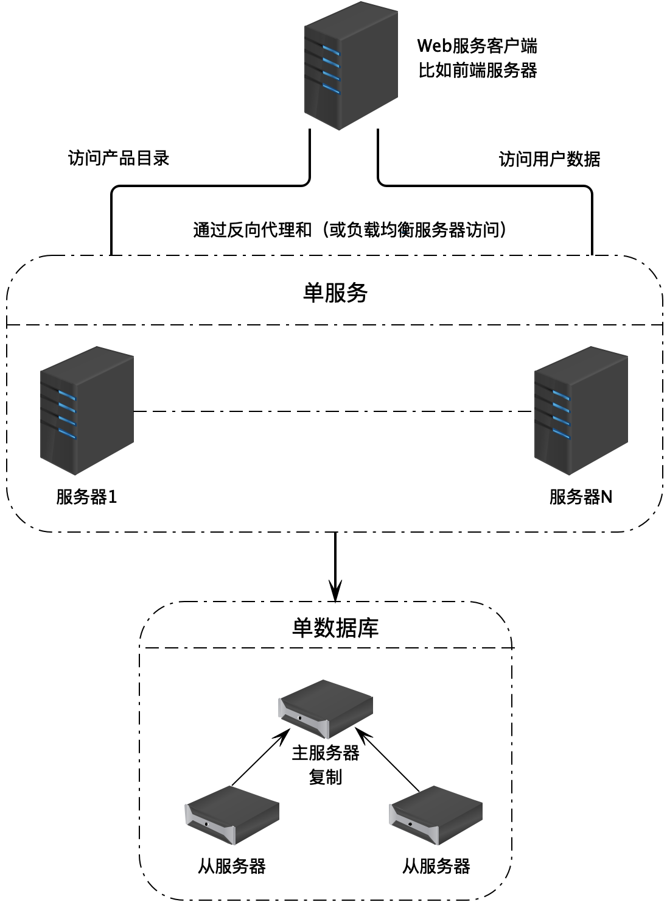
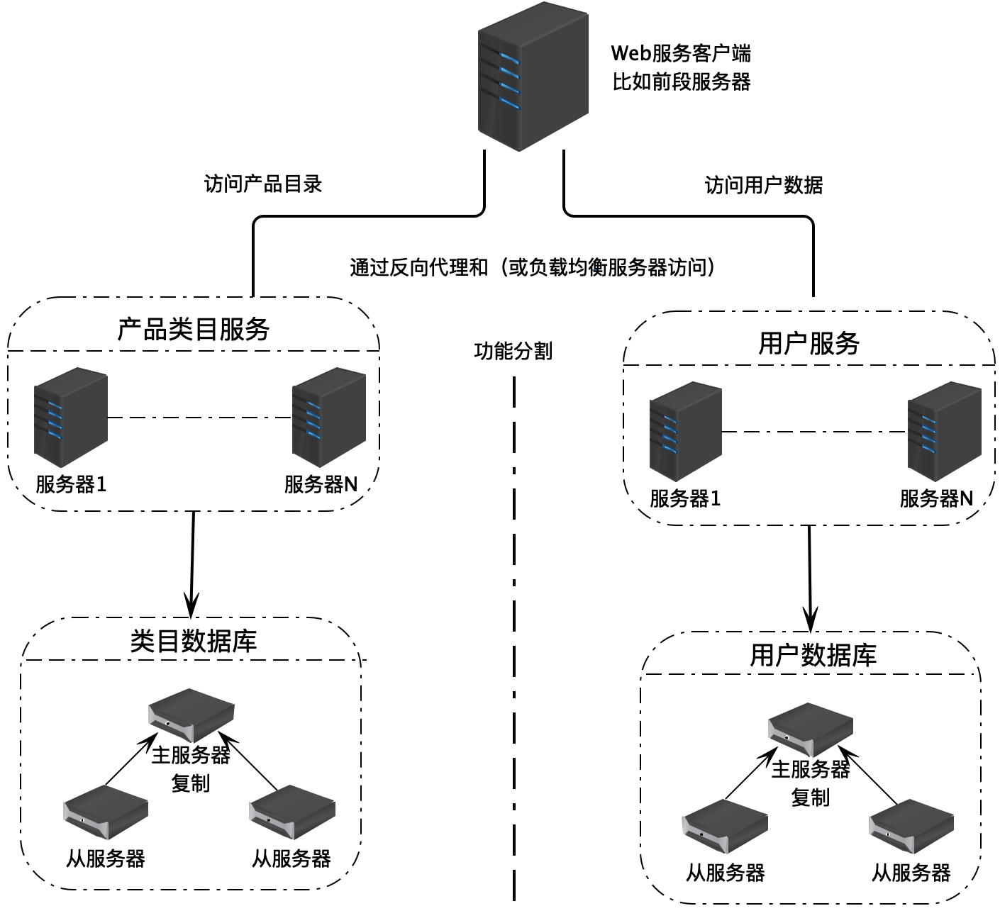
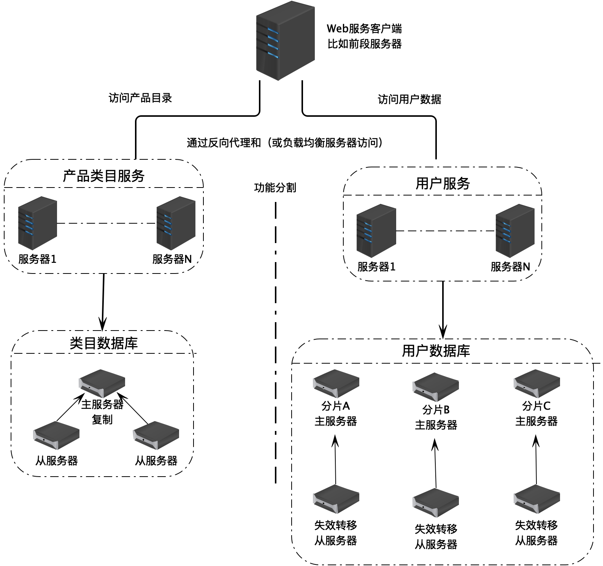
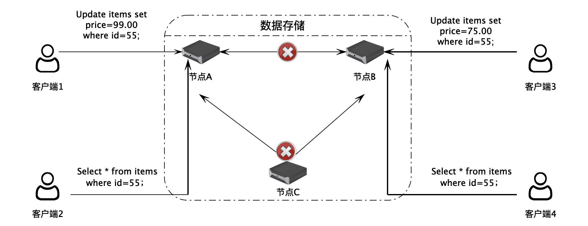
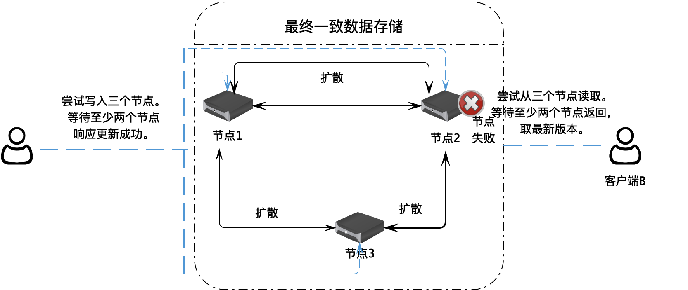

- 00 开篇词 掌握软件开发技术的第一性原理.md
- 01 程序运行原理：程序是如何运行又是如何崩溃的？.md
- 02 数据结构原理：Hash表的时间复杂度为什么是O(1)？.md
- 03 Java虚拟机原理：JVM为什么被称为机器（machine）？.md
- 04 网络编程原理：一个字符的互联网之旅.md
- 05 文件系统原理：如何用1分钟遍历一个100TB的文件？.md
- 06 数据库原理：为什么PrepareStatement性能更好更安全？.md
- 07 答疑 Java Web程序的运行时环境到底是怎样的？.md
- 07 编程语言原理：面向对象编程是编程的终极形态吗？.md
- 08 软件设计的方法论：软件为什么要建模？.md
- 09 软件设计实践：如何使用UML完成一个设计文档？.md
- 10 软件设计的目的：糟糕的程序员比优秀的程序员差在哪里？.md
- 11 软件设计的开闭原则：如何不修改代码却能实现需求变更？.md
- 12 软件设计的依赖倒置原则：如何不依赖代码却可以复用它的功能？.md
- 13 软件设计的里氏替换原则：正方形可以继承长方形吗？.md
- 14 软件设计的单一职责原则：为什么说一个类文件打开最好不要超过一屏？.md
- 15 软件设计的接口隔离原则：如何对类的调用者隐藏类的公有方法？.md
- 16 设计模式基础：不会灵活应用设计模式，你就没有掌握面向对象编程.md
- 17 设计模式应用：编程框架中的设计模式.md
- 18 反应式编程框架设计：如何使程序调用不阻塞等待，立即响应？.md
- 19 组件设计原则：组件的边界在哪里？.md
- 20 答疑 对于设计模式而言，场景到底有多重要？.md
- 20 领域驱动设计：35岁的程序员应该写什么样的代码？.md
- 21 分布式架构：如何应对高并发的用户请求.md
- 22 缓存架构：如何减少不必要的计算？.md
- 23 异步架构：如何避免互相依赖的系统间耦合？.md
- 24 负载均衡架构：如何用10行代码实现一个负载均衡服务？.md
- 25 数据存储架构：如何改善系统的数据存储能力？.md
- 26 搜索引擎架构：如何瞬间完成海量数据检索？.md
- 27 微服务架构：微服务究竟是灵丹还是毒药？.md
- 28 高性能架构：除了代码，你还可以在哪些地方优化性能？.md
- 29 高可用架构：我们为什么感觉不到淘宝应用升级时的停机？.md
- 30 安全性架构：为什么说用户密码泄漏是程序员的锅？.md
- 31 大数据架构：大数据技术架构的思想和原理是什么？.md
- 32 AI与物联网架构：从智能引擎到物联网平台.md
- 33 区块链技术架构：区块链到底能做什么？.md
- 33 答疑 互联网需要解决的技术问题是什么？.md
- 34 技术修炼之道：同样工作十几年，为什么有的人成为大厂架构师，有的人失业？.md
- 35 技术进阶之道：你和这个星球最顶级的程序员差几个等级？.md
- 36 技术落地之道：你真的知道自己要解决的问题是什么吗？.md
- 37 技术沟通之道：如何解决问题？.md
- 38 技术管理之道：你真的要转管理吗？.md
- 38 答疑 工作中的交往和沟通，都有哪些小技巧呢？.md
- 加餐 软件设计文档示例模板.md
- 结束语 期待未来的你，成为优秀的软件架构师.md
25 数据存储架构：如何改善系统的数据存储能力？
在整个互联网系统架构中，承受着最大处理压力，最难以被伸缩的，就是数据存储部分。原因主要有两方面。一方面，数据存储需要使用硬盘，而硬盘的处理速度要比其他几种计算资源，比如CPU、内存、网卡都要慢一些；另一方面，数据是公司最重要的资产，公司需要保证数据的高可用以及一致性，非功能性约束更多一些。
因此数据存储通常都是互联网应用的瓶颈。在高并发的情况下，最容易出现性能问题的就是数据存储。目前用来改善数据存储能力的主要手段包括：数据库主从复制、数据库分片和NoSQL数据库。
数据库主从复制
我们以MySQL为例，看下数据库主从复制的实现技术以及应用场景。
MySQL的主从复制，顾名思义就是将MySQL主数据库中的数据复制到从数据库中去。主要的复制原理是，当应用程序客户端发送一条更新命令到主服务器数据库的时候，数据库会把这条更新命令同步记录到Binlog中，然后由另外一个线程从Binlog中读取这条日志，通过远程通讯的方式将它复制到从服务器上面去。
从服务器获得这条更新日志后，将其加入到自己的Relay Log中，然后由另外一个SQL执行线程从Relay log中读取这条新的日志，并把它在本地的数据库中重新执行一遍，这样当客户端应用程序执行一个update命令的时候，这个命令会同时在主数据库和从数据库上执行，从而实现了主数据库向从数据库的复制，让从数据库和主数据库保持一样的数据。
 通过数据库主从复制的方式，我们可以实现数据库读写分离。写操作访问主数据库，读操作访问从数据库，使数据库具有更强大的访问负载能力，支撑更多的用户访问。在实践中，通常采用一主多从的数据复制方案，也就是说，一个主数据库将数据复制到多个从数据库，多个从数据库承担更多的读操作压力，以及不同的角色，比如有的从数据库用来做实时数据分析，有的从数据库用来做批任务报表计算，有的单纯做数据备份。
采用一主多从的方案，当某个从数据库宕机的时候，还可以将读操作迁移到其他从数据库上，保证读操作的高可用。但如果主数据库宕机，系统就没法使用了，因此现实中，也会采用MySQL主主复制的方案。也就是说，两台服务器互相备份，任何一台服务器都会将自己的Binlog复制到另一台机器的Relay Log中，以保持两台服务器的数据一致。

使用主主复制需要注意的是，主主复制仅仅用来提升数据写操作的可用性，并不能用来提高写操作的性能。任何时候，系统中都只能有一个数据库作为主数据库，也就是说，所有的应用程序都必须连接到同一个主数据库进行写操作。只有当该数据库宕机失效的时候，才会将写操作切换到另一台主数据库上。这样才能够保证数据库数据的一致性，不会出现数据冲突。
此外，不管是主从复制还是主主复制，都无法提升数据库的存储能力，也就是说，不管增加多少服务器，这些服务器存储的数据都是一样的。如果数据量太大，数据库无法存下这么多的数据，通过数据库复制是无法解决问题的。
数据库分片
我们上面说到，数据库主从复制无法解决数据库的存储问题，但是数据库分片技术可以解决。也就是说，将一张表的数据分成若干片，每一片都包含了数据表中一部分的行记录，然后每一片存储在不同的服务器上，这样一张表就存储在多台服务器上了。
最简单的数据库分片存储可以采用硬编码的方式，在程序代码中直接指定一条数据库记录要存放到哪个服务器上。比如将用户表分成两片，存储在两台服务器上，那么就可以在程序代码中根据用户ID进行分片计算，ID为偶数的用户记录存储到服务器1，ID为奇数的用户记录存储到服务器2。
 但是硬编码方式的缺点比较明显。首先，如果要增加服务器，那么就必须修改分片逻辑代码，这样程序代码就会因为非业务需求产生不必要的变更；其次，分片逻辑耦合在处理业务逻辑的程序代码中，修改分片逻辑或者修改业务逻辑都可能使另一部分代码因为不小心的改动而出现Bug。
但是我们可以通过使用分布式关系数据库中间件解决这个问题，将数据的分片逻辑在中间件中完成，对应用程序透明。
比如MYCAT。
 应用程序像使用MySQL数据库一样连接MYCAT，提交SQL命令。MYCAT在收到SQL命令以后，查找配置的分片逻辑规则。比如上图例子中，根据地区进行数据分片，不同地区的订单存储在不同的数据库上，那么MYCAT就可以解析出SQL中的地区字段prov，根据这个字段连接相对应的数据库。例子中SQL的地区字段是“wuhan”，而在MYCAT中配置“wuhan”对应的数据库是DB1，用户提交的这条SQL最终会被发送给DB1数据库进行处理。
实践中，更常见的数据库分片算法是我们所熟悉的余数Hash算法，根据主键ID和服务器的数目进行取模计算，根据余数连接相对应的服务器。
关系数据库的混合部署
我在上面提到了关系数据库的主从复制、主主复制、数据库分片这几种改善数据读写以及存储能力的技术方案。事实上，这几种方案可以根据应用场景的需要混合部署，也就是说，可以在一个系统中混合使用以上多种技术方案。
对于数据访问和存储压力不太大，对可用性要求也不太高的系统，也许部署在单一服务器上的数据库就可以解决，所有的应用服务器都连接访问这一台数据库服务器。

如果访问量比较大，同时对数据可用性要求也比较高，那么就需要使用数据库主从复制技术，将数据库部署在多台服务器上。
 随着业务复杂以及数据存储和访问压力的增加，这时候可以选择业务分库。也就是说，将不同业务相关的数据库表，部署在不同的服务器上，比如类目数据和用户数据相对关联关系不大，服务的应用也不一样，那么就可以将这两类数据库部署在不同的服务器上。而每一类数据库还可以继续选择使用主从复制，或者主主复制。

不同的业务数据库，其数据库存储的数据和访问压力也是不同的，比如用户数据库的数据量和访问量就可能是类目数据库的几十倍，甚至上百倍。那么这时候就可以针对用户数据库进行数据分片，而每个分片数据库还可以继续进行主从复制或者主主复制。

NoSQL数据库
NoSQL数据是改善数据存储能力的一个重要手段。NoSQL数据库和传统的关系型数据库不同，它主要的访问方式不是使用SQL进行操作，而是使用Key、Value的方式进行数据访问，所以被称作NoSQL数据库。NoSQL数据库主要用来解决大规模分布式数据的存储问题。常用的NoSQL数据库有Apache HBase，Apache Cassandra等，Redis虽然是一个分布式缓存技术产品，但有时候也被归类为NoSQL数据库。
NoSQL数据库面临的挑战之一是数据一致性问题。如果数据分布存储在多台服务器组成的集群上，那么当有服务器节点失效的时候，或者服务器之间网络通信故障的时候，不同用户读取的数据就可能会不一致。

比如用户1连接服务器节点A，用户2连接服务器节点B，当两个用户同时修改某个数据的时候，如果正好服务器A和服务器B之间的网络通信失败，那么这两个节点上的数据也就不一致了，其他用户在访问这个数据的时候，可能会得到不一致的结果。
关于分布式存储系统有一个著名的CAP原理，CAP原理说：一个提供数据服务的分布式系统无法同时满足数据一致性（Consistency）、可用性（Availability）和分区耐受性（Partition Tolerance）这三个条件。
一致性是说，每次读取的数据都应该是最近写入的数据或者返回一个错误，而不是过期数据，也就是说，数据是一致的。
可用性是说，每次请求都应该得到一个响应，而不是返回一个错误或者失去响应，不过这个响应不需要保证数据是最近写入的。也就是说，系统需要一直都是可以正常使用的，不会引起调用者的异常，但是并不保证响应的数据是最新的。
分区耐受性说，即使因为网络原因，网络分区失效的时候，部分服务器节点之间消息丢失或者延迟了，系统依然应该是可以操作的。
CAP原理是说，当网络分区失效发生的时候，我们要么取消操作，保证数据就是一致的，但是系统却不可用；要么继续写入数据，但是数据的一致性就得不到保证了。
对于一个分布式系统而言，网络失效一定会发生，也就是说，分区耐受性是必须要保证的，而对于互联网应用来说，可用性也是需要保证的，分布式存储系统通常需要在一致性上做一些妥协和增强。
Apache Cassandra解决数据一致性的方案是，在用户写入数据的时候，将一个数据写入集群中的三个服务器节点，等待至少两个节点响应写入成功。用户读取数据的时候，从三个节点尝试读取数据，至少等到两个节点返回数据，并根据返回数据的时间戳，选取最新版本的数据。这样，即使服务器中的数据不一致，但是最终用户还是能得到一个一致的数据，这种方案也被称为最终一致性。

小结
有人说，架构是一门关于权衡的艺术，这一点在数据存储架构上表现得最为明显。由于数据存储的挑战性和复杂性，无论你选择何种技术方案，都会带来一些新的问题和挑战。数据存储架构没有银弹，没有一劳永逸的解决方案，唯有在深刻理解自己业务场景和各种分布式存储技术特点的基础上，进行各种权衡考虑，选择最合适的解决方案，并想办法弥补其缺陷，才能真正解决问题。
我在架构模块第一篇就讨论了垂直伸缩和水平伸缩这两种不同的架构思路。因为各种原因，互联网应用主要采用的是水平伸缩，也就是各种分布式技术。事实上，在数据存储方面，有时候采用垂直伸缩，也就是使用更好的硬件服务器部署数据库，也是一种不错的改善数据存储能力的手段。
思考题
分布式架构的一个最大特点是可以动态伸缩，可以随着需求变化，动态增加或者减少服务器。对于支持分片的分布式关系数据库而言，比如我们使用MYCAT进行数据分片，那么随着数据量逐渐增大，如何增加服务器以存储更多的数据呢？如果增加一台服务器，如何调整数据库分片，使部分数据迁移到新的服务器上？如何保证整个迁移过程快速、安全？
欢迎你在评论区写下你的思考，也欢迎把这篇文章分享给你的朋友或者同事，一起交流一下。
© 2019 - 2023 Liangliang Lee. Powered by Vert.x and hexo-theme-book.